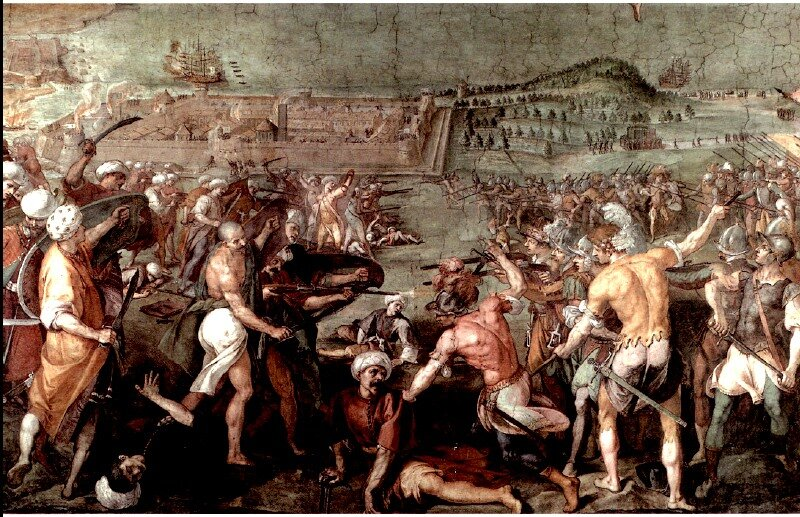
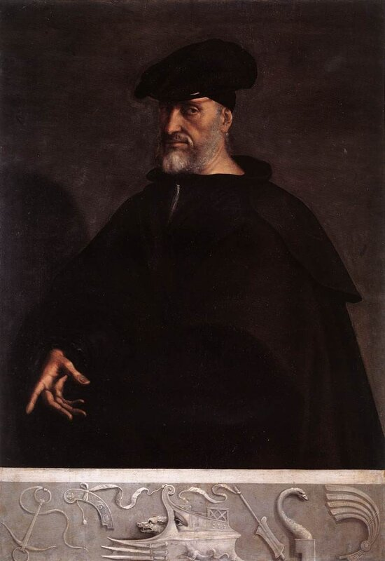

«Voilà donc, en dépit du peu de sang répandu , une bataille qui mérite de prendre place parmi les grands combats de mer.»
Jurien de la Gravière
Несмотря на небольшое количество пролитой крови, эта битва [при Превезе] все же должна занять место среди великих морских сражений.
Жюрьен де ля Гравьер, французский адмирал.
«Do you keep a dog?"
"Yes, I do keep a dog."
"Bear in mind then, that Brag is a good dog, but Holdfast is a better. Bear that in mind, will you?" repeated Mr. Jaggers»
- Вы собаку держите?
- Ну, держу.
- Так имейте в виду, что Брехун - хороший пес, а Хватай - еще лучше.
Пожалуйста, имейте это в виду, - повторил мистер Джеггерс
Ч.Диккенс, Большие надежды (Перевод М. Лорие)
После того, как мы представили описание событий 1538 года при Превезе, поговорим немного об обстоятельствах, которые их сопровождали, и о последствиях, к которым они привели.

Аллегорическое изображение битвы при Превезе (Бернардино Барбателли)
Почему мы, рассуждая о галерах и, в частности, о галерах Мальтийского ордена, такое внимание уделили событиям при Превезе 1538 года?
Во-первых, потому что за весь тот период, когда во флотах основных Средиземноморских держав основным боевым кораблем была галера, известны всего только три крупномасштабных кампании на море, в которых отмечено противостояние между крупными соединениями боевых кораблей: помимо собственно Превезы это были Джерба 1560 года и Лепанто 1571 года, о которых, я надеюсь, мы еще поговорим.
Во-вторых, потому что события 1538 года развернулись в точности в тех же водах, что и самое знаменитое сражение гребных флотов античности – битва при Акции, что невольно вызывает стремление сравнить эти два события.
И наконец, в-третьих, потому что в кампании 1538 года был такой накал тайных и явных человеческих страстей, что пройти мимо него ни один человек, которого интересует история флота, не может. Этот накал можно ощутить даже в современных исследованиях, о чем мы уже упоминали выше и что, несомненно, сказалось на оценках этого события.
Имеются и другие особенности, которые не могут не привлекать внимание заинтересованного исследователя.
1. Прежде всего возраст командующих противостоящими группировками. Андреа Дориа было в то время семьдесят лет (по самым скромным подсчетам; вообще-то принято считать, следуя первоначальным разысканиям Гулльелмотти (Guglielmotti), что родился Дориа в 1466 году).; Барбаросса был постарше – ему было восемьдесят два. (Это как контрпример к анекдотам о нашем престарелом Политбюро начала восьмидесятых годов прошлого века.). Командующему венецианским контингентом флота Лиги Виченцо Капелло было шестьдесят восемь. В связи с этим не может не возникнуть вопрос: не были ли колебания и нерешительность сторон следствием «возрастного» фактора?
2. Между членами Лиги полностью отсутствовало взаимопонимание относительно целей этой кампании. Если Карл V стремился в результате ее проведения уничтожить основные силы турецкого флота, то Венеция видела в ней лишь защиту своих интересов в Ионическом море.
3. С оперативно-тактической точки зрения было очень плохо отработано взаимодействие между парусными и парусно-гребными кораблями. Эскадра галер Дориа, хотя и прибыла на Корфу 5 сентября с вопиющим опозданием, не была последней в этом затянувшемся формировании флота. Парусных кораблей пришлось дожидаться до 22 сентября. В ходе самого сражения не было предусмотрено никакой поддержки парусным кораблям на случай неблагоприятных погодных условий, что практически погубило все эскадры христианских парусников, потерявших ход в результате штиля.
4. Располагая численным превосходством, Дориа не смог его использовать и позволил Барбароссе применить излюбленную пиратскую тактику уничтожения противника по частям.
5. В отличие от Дориа, Барбаросса большое значение придавал организации морской разведки и связи между кораблями. Когда его дозорные суда обнаружили папскую эскадру Гримани в Артском заливе, он направил туда все наличные силы, чтобы уничтожить ее. И только своевременный отход Гримани на Корфу позволил избежать большой беды. Впрочем, если бы Барбаросса проявил большую решительность и начал преследование галер Гримани, то не исключено, что он смог бы разгромить венецианские и папские силы еще до прибытия галер и кораблей Андреа Дориа. Явилась ли эта нерешительность следствием преклонного возраста пирата? Вряд ли. Об этом свидетельствует такой факт. Когда разведка Барбароссы захватила поблизости от Корфу суда рыбаков, турецкий адмирал лично допросил экипажи о численности кораблей флота лиги и, что ни разу не случалось за всю карьеру Барбароссы, отправил захваченных рыбаков в Стамбул, чтобы они лично сообщили при дворе султана о своей информации, одновременно ЗАПРОСИВ ИНСТРУКЦИИ о дальнейших действиях возглавляемого им флота. Ни до, ни после такого с великим турецким адмиралом не случалось ни разу. Так что нерешительность командующего в данном случае была скорее всего продиктована политическими соображениями.
6. Одной из основных Особенностей флота Барбароссы, как мы уже знаем, был его состав: в основном, корсары, которые не признавали дисциплины и не всегда подчинялись командам сверху. Барбаросса это превосходно понимал, поэтому собрав командиров перед выходом из Артского залива 27 сентября 1538 года он категорично заявил: «Каждый из вас обязан сохранять свое место в линии. Единственный приказ, который я отдаю на предстоящий бой – следите за моими маневрами и сообразуясь с моими передвижениям производите свои.». Дориа не сумел организовать взаимодействие между силами своего флота несмотря на то, что командиры его кораблей были куда более дисциплинированы.
Великий арифметик! (a great arithmetician) – так, говорит о маневрах Дориа в сражении при Превезе Жюрьен де ля Гравьер, используя презрительное определение, которое шекспировский Яго дал своему сопернику:
А это кто?
Помилуйте, великий арифметик,
Микеле Кассио, некий флорентиец,
Сгубить готовый душу за красотку,
Вовеки взвода в поле не водивший
И смыслящий в баталиях не больше,
Чем пряха; начитавшийся теорий,
Которые любой советник в тоге
Изложит вам; он - не служилый воин,
А пустослов. Но предпочли его.
А мне, который показал себя
На Кипре, на Родосе, в басурманских
И христианских странах, застят ветер
Конторской книгой; этот счетовод
К нему назначен - видишь - лейтенантом,
А я - изволь! - хорунжий при Смуглейшем.
Отелло, акт I, сц.1 (Перевод М.Лозинского)
Поклонники Дориа объясняли его маневр, когда он повел галеры в открытое море, как попытку увлечь за собой турок и дать бой противнику на оперативном просторе с использованием численного преимущества своего флота и артиллерийской поддержки парусных кораблей. Но это объяснение не останавливает язвительного де ла Гравьера: «Отличная комбинация для собственника галер, но очень сомнительная для адмирала Священной Лиги» (Jurien de la Gravière Doria et Barberousse (Paris,1886)).
По мнению Жюрьена де ля Гравьера, за значительно меньшее прегрешение в 1757 году был расстрелян английский адмирал Джон Бинг, который, пытаясь сохранить свои корабли, отказался от преследования более сильного французского флота.

Андреа Дориа кисти Sebastiano del Piombo (1526)
И все же более правдоподобной выглядит версия, что действия Дориа у Превезы диктовались не соображениями морского искусства, а секретным приказом Карла V, который не верил Венеции и одновременно вел сепаратные переговоры с Барбароссой. Достоверного подтверждения эти факты не нашли, но, как говорится , в области предположений возможны все гипотезы. Эта гипотеза сродни предположениям о том, что Людовик XIV, находясь в союзнических отношениях с Англией в 1673 году, дал тайный приказ маршалу д’Эстре, посланному на поддержку флота принца Руперта (Тексельское сражение 1673 года), вести дело таким образом, чтобы английский и голландский флоты уничтожили друг друга в максимальной степени. Иначе чем можно объяснить выход французских кораблей из сражения?
Конечно, если бы не благодарность родной Генуи за восстановление ее независимости и не поддержка Карла V, Дориа ждал бы после Превезы бесславный конец. Однако фактически еще почти двадцать лет старый адмирал, а затем и его юный племянник возглавляли флот Испании, обеспечивая ее доминирование в Западном Средиземноморье. Андреа Дориа умер, прожив девяносто два года. И еще за шесть лет до смерти он командовал своими галерами.
Как бы то ни было, но Дориа вряд ли осознавал все тяжелые последствия своего бездействия при Превезе для Западной Европы.
После Превезы Венеция покинула Лигу и начала сепаратные переговоры с Османской империей о мире. Она вынуждена была смириться с потерей островов в Эгейском море. В это время (28 декабря 1538) скончался венецианский дож Андреа Гритти. Новый дож Пьетро Ландо отправил посла в Стамбул с инструкциями договариваться с султаном о мире на любых условиях, в том числе и обещая выплату значительной суммы в качестве цены за мир. В результате тяжелых переговоров 2 октября 1540 года между Венецией и Османской империей была подписана Капитуляция (Ahdname), фактически являющаяся мирным договором. В соответствии с условиями этого договора Венеция выплатила Османской империи 300 тысяч дукатов золотом.
Объединенные франко-турецкие силы возобновили операции у побережья Каталонии. С примирением османов с Венецией не осталось никакой мало-мальски значимой силы, которая могла бы подмять пиратов на Средиземном море, что сразу же привело к росту мусульманского пиратства, особенно между 1538 и 1570 гг. Руки османов оказались развязанными для противодействия португальской экспансии в Красном море и Индийском океане. Под контроль османов попали Оран (1556), Бизерта (1557), Сиудадела на Менорке (1558), Бужи (1558), Джерба (1559).
О взаимоотношении этих событий с войной на море поговорим в следующий раз.